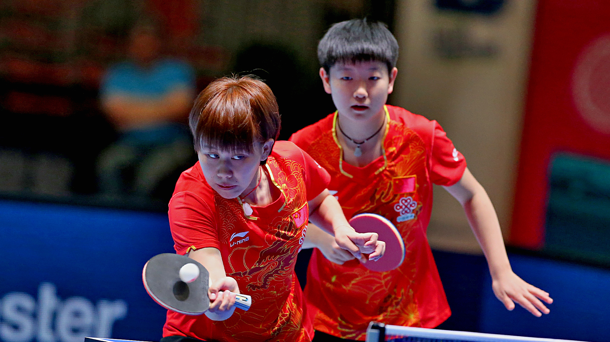

Reigning champions defeated, Chen Xingtong and Sun Yingsha triumph in Linz
The Women’s Doubles trophy on offer at the Seamaster 2017 ITTF World Tour Platinum, Hybiome Austrian Open in Linz has been awarded to Chen Xingtong and Sun Yingsha after the talented Chinese partnership came out on top against the defending champions Honoka Hashimoto and Hitomi Sato (4-11, 11-7, 7-11, 12-10, 11-4) on Sunday 24th September.
Chen Xingtong and Sun Yingsha entered the gold medal contest as one of the tournament’s surprise packages and were handed the difficult task of competing against the top seeds in the final.
The seventh seeded pairing of Chen Xingtong and Sun Yingsha contributed one of the major shocks of the Women’s Doubles category, defeating the third seeds Chen Meng and Wang Manyu in the quarter-finals of the competition.
Now the Chinese teenage stars have added another triumph to the list, defeating the 2016 gold medallists in a tight five games encounter.
Three games into the final it was the steady Japanese duo who held the advantage and were just a game away from securing the title.
However, a spirited comeback from Chen Xingtong and Sun Yingsha followed as the no.7 seeds claimed back-to-back game wins to reach the top step of the podium (4-11, 11-7, 7-11, 12-10, 11-4).
“When we met them at the Japan Open earlier this year, we also came back from behind to defeat them because we couldn’t get used to their style. We were really determined to win today especially in the final game. This is our second title together, it shows that we have built a good rapport and are coordinating better between each other. We will be even better in the future!” -Sun Yingsha
Success for Chen Xingtong and Sun Yingsha means that the players have now won two Women’s Doubles trophies as a partnership, having emerged victorious at the Seamaster 2017 China Open.
Honoka Hashimoto and Hitomi Sato settle for a silver medal finish, and will have to wait to add to their total of three gold medals as a Women’s Doubles pair on the ITTF World Tour.